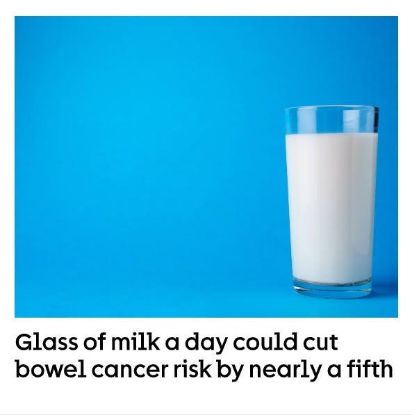

Yogurt has long-term evidence behind it; processed whey supplements do not
Louis argues yogurt has consistent long-term epidemiology and trials like Lyon, PREDIMED and CORDIOPREV encouraged it, whereas processed whey has no long-term data.
35 posts
Louis argues yogurt has consistent long-term epidemiology and trials like Lyon, PREDIMED and CORDIOPREV encouraged it, whereas processed whey has no long-term data.
Louis summarizes a randomized crossover study that matched saturated fat in full-fat yogurt versus low-fat yogurt mixed with butter for 4 weeks each. The butter version raised ApoB while full-fat yogurt lowered it, which the authors attribute to the milk fat globule membrane (MFGM) that stays intact in yogurt but is lost in butter. This may partly explain yogurt's favorable epidemiology.

Louis summarizes a randomized crossover trial matching saturated fat between full-fat yogurt and low-fat yogurt with added butter. Despite equal saturated fat, the butter arm raised ApoB while full-fat yogurt lowered it, which the study attributes to the milk fat globule membrane (MFGM) that is intact in yogurt but lost in butter. He suggests this may partly explain why yogurt looks better than other dairy in epidemiology.
Louis explains that non-fermented dairy saturated fat strongly raises LDL and ApoB while fermentation attenuates this. In a randomized crossover trial, full-fat yogurt reduced ApoB while low-fat yogurt with butter increased it, likely due to milk fat globule membrane.

Louis comments on a news-covered observational study in which regular higher-fat cheese and cream, but not low-fat versions, butter or milk, were linked to lower dementia risk over 25 years. He cautions about confounding and reverse causality and notes dairy saturated fat, especially fermented dairy, may differ from red-meat saturated fat.

Louis shares a Cancer Research UK-funded Oxford study finding that the calcium in a large glass of milk daily could lower bowel cancer risk by nearly 20%, from dairy or non-dairy sources. Louis adds that excess calcium may contribute to CVD, which is controversial in cardiology.

William Wallace shares the Nilsson 2004 trial: in 12 healthy volunteers, whey produced a 90% higher insulin AUC and 57% lower glucose AUC than white bread, tracking plasma branched-chain amino acids. He argues repeated large insulin surges raise IGF1 and mTOR and may have long-term costs, disagreeing with a source that dismisses the concern.
Louis discusses a Nature Communications cohort study and meta-analysis suggesting cheese slightly lowers CVD risk. He cautions that comparisons are typically against the standard American diet, so the result depends on what cheese replaces.

Louis says Walter Willett shares his concern that processed whey could raise insulin, IGF-1 and mTOR, which are implicated in cancer, heart disease and aging. He notes whey has short-term benefits but little long-term data.

Louis explains that the USA lets manufacturers list 0 g trans fat when a serving has under 0.5 g, which can add up over several servings, so the ingredient list ('partially hydrogenated') is the reliable check. He notes natural ruminant trans fat in dairy and beef does not appear to share the harms. A WHO figure in the share says each 2% of energy from trans fat raises heart disease risk 25% and all-cause death 14%.

Louis summarises Harvard Nurses' and Physicians' follow-up data on nearly 300,000 people over 30 years. Plant protein was protective, fish and poultry slightly so, dairy and eggs neutral, unprocessed red meat slightly harmful and processed meat strongly harmful.

Louis highlights the widely cited 2020 NEJM review on dairy and disease risk. It concludes that high dairy intake is not supported for preventing fractures, is not clearly linked to weight, diabetes or CVD, and may raise prostate and endometrial cancer risk while lowering colorectal cancer risk. Effects depend on the comparison food: dairy fares better than processed red meat or sugary drinks but worse than nuts.
Louis links a New York Times piece on whether saturated fat is actually good for you, after Robert F. Kennedy Jr. signaled a shift in dietary advice. His short answer is to replace saturated fat with unsaturated fats from olive oil, nuts, seeds and avocados, noting fermented dairy may blunt saturated fat's effects but this is still debated.

Louis argues processed whey spikes insulin more than glucose or white bread and may raise insulin/IGF-1, which promote cancer cell growth. He cites Walter Willett's 2017 book cautioning that protein supplements add little muscle without exercise and that BCAAs increase IGF-1, which may raise breast and prostate cancer risk.
Louis quotes Harvard's Nutrition Source on yogurt. Cohorts of 120,877 people suggested protection from weight gain, and two meta-analyses of prospective cohorts found 18% and 14% lower type 2 diabetes risk with daily yogurt. Helpful bacteria are suggested to reduce inflammation or improve insulin action, though the mechanism is unclear.
Louis argues that every long-lived population studied includes carbohydrate from vegetables, fruits, legumes, nuts, seeds, whole grains or fermented dairy, and that the few carbohydrate-free-eating groups, such as certain Eskimo populations, were not notably long-lived. He says low-carb diets may help short-term but long-term heart-disease effects are speculative, so he suggests including low-GI carbohydrates.
Louis highlights that butter and cheese contain similar saturated fat but affect LDL differently because of food matrix. Churning strips the natural milk-fat wrapper, while in cheese fat stays in a protein mesh, with calcium and fermentation also possibly modifying effects. The shared clip adds that cheese is no free pass given its calories and salt.

Louis repeats his summary of the Nurses' and Physicians' follow-up studies: plant protein protective, processed meat by far the worst.
Louis shares a review arguing milk acts as a signaling system that activates mTORC1 for neonatal growth, via exosomes and miRNAs. He notes fermentation (yogurt, cheese) destroys these exosomes and pasteurization helps less.

A Swedish cohort of over 76,000 adults found that following the updated Nordic dietary guidelines was associated with lower mortality, including from cancer and CVD. The guidelines favor whole grains, legumes, low-fat dairy, fish and vegetables, with less red meat, processed foods and added sugar.
Louis shares an Atlantic article on odd observational links between ice cream and lower diabetes risk. He cautions that the comparisons are against the standard American diet, that interviewed scientists mostly attribute the association to reverse causality, and that fruit, nuts and dark chocolate are better desserts.

A Washington Post interview with Harvard nutrition researcher Walter Willett. He says his group's data showed total fat was irrelevant, trans fats were bad, saturated fat versus refined carbohydrate was only weakly related to heart disease, and unsaturated fats were linked to lower heart disease and mortality. He also describes his own diet, including oats, nuts, blueberries and a plant-based lunch.

Louis shares Walter Willett's summary of nearly 300,000 people followed for 30+ years. Plant protein is protective, fish and poultry slightly protective, dairy and eggs neutral, unprocessed red meat modestly harmful, and processed meat strongly increases mortality.

Louis rebuts claims that processed meat is harmless and shares his earlier summary of nearly 300,000 people tracked over 30 years in the Nurses' Health Studies and HPFS. Protein type mattered more than amount: plant protein protective, processed meat strongly harmful.

A randomized trial overfed three groups by 1000 calories for 3 weeks from butter/dairy, olive oil/nuts or added sugar. Liver fat rose 55%, 15% and 33% respectively, showing calories are not equal for the liver.
Louis quotes Harvard's Nutrition Source page correcting myths about dietary fat. It says polyunsaturated fats from vegetable oils, nuts and seeds help ward off type 2 diabetes, trans fats do the opposite, and the PREDIMED Mediterranean diet with olive oil or nuts reduced cardiovascular events.
Louis shares a Walter Willett clip noting that countries with low milk consumption, such as Indonesia and much of Asia, have the lowest fracture rates. His NEJM work suggests calcium needs may be lower than official recommendations, and bone health depends on diet, movement and lifestyle.

Louis summarizes 30-year follow-up in the Harvard Nurses' Health Study and Health Professionals Follow-up Study: whole-food plant protein is associated with better outcomes, especially for heart disease. The benefit depends on the animal protein type: plant protein is only slightly better than fish, poultry and fermented dairy but clearly better than red and processed meat.
Louis shares a Jessica Knurick video sponsored by CSPI. The accompanying note says most researchers who wrote the scientific justification report have conflicts of interest with meat, dairy or supplement companies.
Louis shares a Washington Post article in which Walter Willett cites protein, especially animal and dairy protein, raising a growth-promoting hormone (IGF-1), which could contribute to cancer when cell multiplication is excessive.

Louis reshares his summary of protein intake and mortality in nearly 300,000 people followed over 30 years in the Nurses' Health Studies and Health Professionals Follow-up Study. Plant protein was protective, fish and poultry slightly so, dairy and eggs neutral, while unprocessed red meat modestly and processed meat very strongly raised mortality.
Louis cites the Harvard Nurses' Health and Health Professionals cohorts behind Walter Willett's comments. Protein percentage of calories showed little relation to health outcomes across the studied range, but the source of protein did.
Louis shares a summary suggesting full-fat cheese affects LDL less than butter or cream despite similar saturated fat. In a randomized trial full-fat cheese lowered LDL more than reduced-fat cheese supplemented with butter, and another study found cheese eaters excreted more fat in stool than butter eaters. Results are not perfectly consistent and benefits may level off around 50 g/day.
Joel Kahn shares a study on dairy fat and dementia, cautioning it is imperfect. Louis adds hashtags only.

A shared article reports that milk, butter, yogurt and cheese contain small amounts of naturally occurring trans fats, and that a large review suggests these do not carry the cardiovascular risks tied to industrial trans fats. No numbers or review details are given in the post.